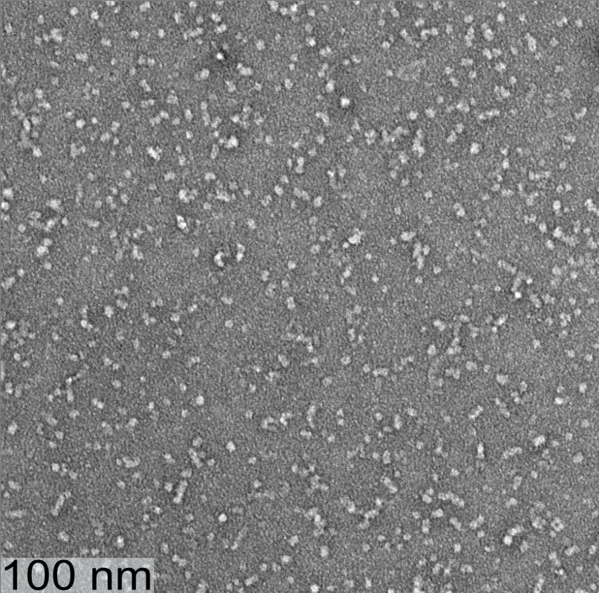

01 · DISEASE
Alzheimer's amyloid-β oligomers
Growing evidence points to small, soluble oligomers, not plaques, as the main toxic species in Alzheimer's disease. We solve the structure of stable ~150 kDa Aβ42 oligomers to learn why they stop growing and how they damage cells.
Read more
Aβ oligomers can form on-pathway, eventually becoming fibrils, or off-pathway, staying size-limited. Our collaborators at the Mayo Clinic prepare stable off-pathway oligomers of uniform size, built from roughly 50 peptide strands. Solid-state NMR shows that these oligomers hold out-of-register parallel β-sheets alongside antiparallel β-sheets, which sets them apart from fibrils.
With Dr. Terrone Rosenberry (Mayo Clinic)